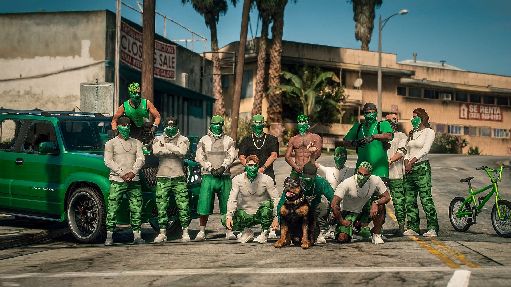

Игра: GTA V
Культовая игра с открытым миром, тремя главными героями и огромным количеством возможностей — от сюжетных миссий до онлайн-режима.
Почему рекомендую: свобода действий, живой город Лос-Сантос и отличный юмор. В неё можно играть годами и находить что-то новое.